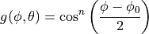
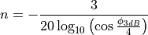

3.1. Design documentation¶
3.1.1. Overview¶
The Antenna module provides:
a class (Angles) and utility functions to deal with angles
a base class (AntennaModel) that provides an interface for the modeling of the radiation pattern of an antenna;
a set of classes derived from this base class that each models the radiation pattern of different types of antennas;
a base class (PhasedArrayModel) that provides a flexible interface for modeling a number of Phase Antenna Array (PAA) models
a class (UniformPlanarArray) derived from this base class, implementing a Uniform Planar Array (UPA) supporting both rectangular and linear lattices
3.1.2. Angles¶
The Angles class holds information about an angle in 3D space using spherical coordinates in radian units. Specifically, it uses the azimuth-inclination convention, where
Inclination is the angle between the zenith direction (positive z-axis) and the desired direction. It is included in the range [0, pi] radians.
Azimuth is the signed angle measured from the positive x-axis, where a positive direction goes towards the positive y-axis. It is included in the range [-pi, pi) radians.
Multiple constructors are present, supporting the most common ways to encode information on a direction. A static boolean variable allows the user to decide whether angles should be printed in radian or degree units.
A number of angle-related utilities are offered, such as radians/degree conversions, for both scalars and vectors, and angle wrapping.
3.1.3. AntennaModel¶
The AntennaModel uses the coordinate system adopted in [Balanis] and
depicted in Figure Coordinate system of the AntennaModel. This system
is obtained by translating the Cartesian coordinate system used by the
ns-3 MobilityModel into the new origin  which is the location
of the antenna, and then transforming the coordinates of every generic
point
which is the location
of the antenna, and then transforming the coordinates of every generic
point  of the space from Cartesian coordinates
into spherical coordinates
of the space from Cartesian coordinates
into spherical coordinates
 .
The antenna model neglects the radial component
.
The antenna model neglects the radial component  , and
only considers the angle components
, and
only considers the angle components  . An antenna
radiation pattern is then expressed as a mathematical function
. An antenna
radiation pattern is then expressed as a mathematical function
 that returns the
gain (in dB) for each possible direction of
transmission/reception. All angles are expressed in radians.
that returns the
gain (in dB) for each possible direction of
transmission/reception. All angles are expressed in radians.

Coordinate system of the AntennaModel¶
3.1.4. Single antenna models¶
In this section we describe the antenna radiation pattern models that are included within the antenna module.
3.1.4.1. IsotropicAntennaModel¶
This antenna radiation pattern model provides a unitary gain (0 dB) for all direction.
3.1.4.2. CosineAntennaModel¶
This is the cosine model described in [Chunjian]: the antenna gain is determined as:

where is the azimuthal orientation of the antenna (i.e., its direction of maximum gain) and the exponential

determines the desired 3dB beamwidth . Note that
this radiation pattern is independent of the inclination angle
 .
.
A major difference between the model of [Chunjian] and the one implemented in the class CosineAntennaModel is that only the element factor (i.e., what described by the above formulas) is considered. In fact, [Chunjian] also considered an additional antenna array factor. The reason why the latter is excluded is that we expect that the average user would desire to specify a given beamwidth exactly, without adding an array factor at a latter stage which would in practice alter the effective beamwidth of the resulting radiation pattern.
3.1.4.3. ParabolicAntennaModel¶
This model is based on the parabolic approximation of the main lobe radiation pattern. It is often used in the context of cellular system to model the radiation pattern of a cell sector, see for instance [R4-092042a] and [Calcev]. The antenna gain in dB is determined as:
where is the azimuthal orientation of the antenna
(i.e., its direction of maximum gain), is its 3 dB
beamwidth, and is the maximum attenuation in dB of the
antenna. Note that this radiation pattern is independent of the inclination angle
.
3.1.4.4. ThreeGppAntennaModel¶
This model implements the antenna element described in [38901]. Parameters are fixed from the technical report, thus no attributes nor setters are provided. The model is largely based on the ParabolicAntennaModel.
3.1.5. Phased Array Model¶
The class PhasedArrayModel has been created with flexibility in mind. It abstracts the basic idea of a Phased Antenna Array (PAA) by removing any constraint on the position of each element, and instead generalizes the concept of steering and beamforming vectors, solely based on the generalized location of the antenna elements. For details on Phased Array Antennas see for instance [Mailloux].
Derived classes must implement the following functions:
GetNumberOfElements: returns the number of antenna elements
GetElementLocation: returns the location of the antenna element with the specified index, normalized with respect to the wavelength
GetElementFieldPattern: returns the horizontal and vertical components of the antenna element field pattern at the specified direction. Same polarization (configurable) for all antenna elements of the array is considered.
The class PhasedArrayModel also assumes that all antenna elements are equal, a typical key assumption which allows to model the PAA field pattern as the sum of the array factor, given by the geometry of the location of the antenna elements, and the element field pattern. Any class derived from AntennaModel is a valid antenna element for the PhasedArrayModel, allowing for a great flexibility of the framework.
3.1.5.1. UniformPlanarArray¶
The class UniformPlanarArray is a generic implementation of Uniform Planar Arrays (UPAs), supporting rectangular and linear regular lattices. It loosely follows the implementation described in the 3GPP TR 38.901 [38901], considering only a single a single panel, i.e., .
By default, the array is orthogonal to the x-axis, pointing towards the positive direction, but the orientation can be changed through the attributes “BearingAngle”, which adjusts the azimuth angle, and “DowntiltAngle”, which adjusts the elevation angle. The slant angle is instead fixed and assumed to be 0.
The number of antenna elements in the vertical and horizontal directions can be configured through the attributes “NumRows” and “NumColumns”, while the spacing between the horizontal and vertical elements can be configured through the attributes “AntennaHorizontalSpacing” and “AntennaVerticalSpacing”.
The polarization of each antenna element in the array is determined by the polarization
slant angle through the attribute “PolSlantAngle”, as described in [38901] (i.e.,  ).
).
C.A. Balanis, “Antenna Theory - Analysis and Design”, Wiley, 2nd Ed.
Li Chunjian, “Efficient Antenna Patterns for Three-Sector WCDMA Systems”, Master of Science Thesis, Chalmers University of Technology, Göteborg, Sweden, 2003
George Calcev and Matt Dillon, “Antenna Tilt Control in CDMA Networks”, in Proc. of the 2nd Annual International Wireless Internet Conference (WICON), 2006
3GPP TSG RAN WG4 (Radio) Meeting #51, R4-092042, Simulation assumptions and parameters for FDD HeNB RF requirements.
Robert J. Mailloux, “Phased Array Antenna Handbook”, Artech House, 2nd Ed.